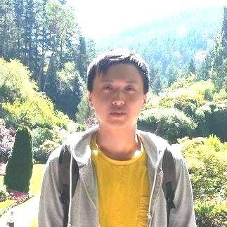

Haoran Yu
Department of Computer Science,
The University of British Columbia
haleyyew@cs.ubc.ca
I am a graduate student in the Data Management and Mining group of the Department of Computer Science in the University of British Columbia.
My research interests are data integration, data mining and machine learning, and large interactive-time database systems.
My knowlege in the field mostly comes from
Michael Stonebraker
,
Maurizio Lenzerini
,
Christopher Ré
,
Cong Yu
,
AnHai Doan
,
Alon Y. Halevy
,
H. V. Jagadish
,
Laks V. S. Lakshmanan
,
Surajit Chaudhuri
,
Ernest Mnkandla
,
Rachel Pottinger
,
Renée J. Miller
,
Xin Dong
,
Fatemeh Nargesian
, and
Keshnee Padayachee
.
My web logs since January 2026:
January 2026
February 2026
My streaming statuses since 2026/1:
January 2026
My keynote presentations since 2026/1:
calgary plc hospital February 2026
calgary shc hospital February 2026
My news articles summaries since 2026/2:
news articles February 2026